An open-vocabulary object database for 3D scans. Click anything to get its mask and its name, ask for anything in words, and query a whole building in milliseconds.
Each object is one tuple: voxels, box, confidence, a segmenter token and mask-pooled 3D vision–language evidence. Built once, queried forever.
IS('whiteboard') AND NEAR(IS('chair'), 1.0): open-vocabulary predicates with calibrated semantics, spatial and boolean operators, and query-time semantic cracking.
Positive and negative clicks on a segmenter that was only trained on positive ones, plus naming from the real photos the scan was made from.
3D scans of rooms, buildings and streets are collected at scale, but they stay raw point sets: every semantic
question (where are the chairs? which monitor is next to the bottle?) means re-running a segmentation
network over the whole scan with a fixed list of class names. We present OpenSNAP, which turns a scan into an
open-vocabulary object database. A scan is ingested once into an object relation: one tuple per object with
its geometry, a learned segmenter token and mask-pooled 3D vision–language evidence. Open-vocabulary predicates such as
IS('whiteboard') get calibrated probabilistic semantics, and an open-vocabulary query language
(OVQL) combines them with spatial (NEAR, ABOVE, ON) and boolean operators.
Queries run on the stored relation in under a millisecond per room (vs. 8.8 s to re-process the scan) and scale to a 68-room building in 0.9–3.4 ms. They are refined lazily by semantic cracking, which materialises the objects a query could not explain and keeps them for later queries. The operators that fill the relation are themselves improved: object-anchored open-vocabulary evidence (58.2 mIoU on ScanNet), click-to-name with a vision–language model (40.1% accuracy on Matterport-160), negative clicks for a segmenter trained only on positive ones (+4 to +15 IoU after five clicks on five datasets), and phone-video ingest with a guard against out-of-distribution features. We evaluate on ScanNet, ScanNet200, Matterport3D-160, S3DIS, Replica, nuScenes and SemanticKITTI.
Two planes. The ingest plane pays the expensive network cost once per scan; the query plane answers every later question from the stored relation and only goes back to the network when it has to.
Ingest runs the frozen networks once and stores one tuple per object. Queries are planned over the relation: a probabilistic open-vocabulary filter, then a room-partitioned spatial join. When no stored object covers a phrase, semantic cracking uses the phrase as a click oracle, materialises the object and keeps it, with a negative cache so a failed lookup is never repeated. Clicks and names write into the same relation.
One-minute system walkthrough.
Real, unfiltered outputs on a Replica room held out from all training. Every query word below is outside the training vocabulary. Pick a phrase or a click.
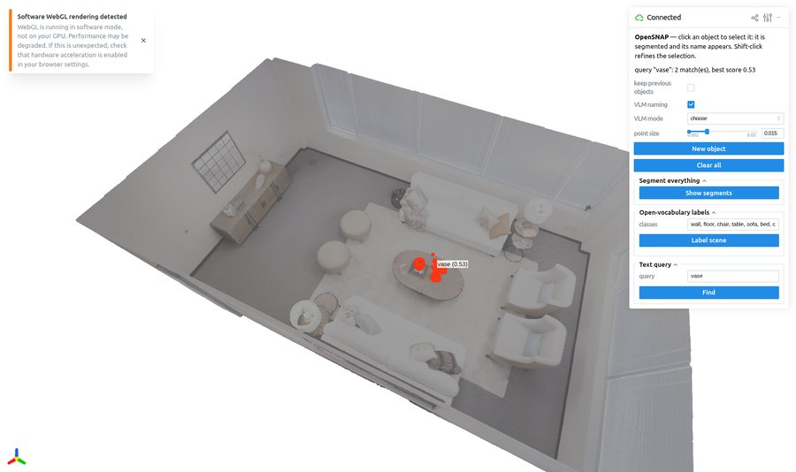
The segmenter was trained with positive clicks only. A corrective decoder (click-type embeddings and a previous-mask prompt), LoRA adapters and test-time token tuning let users say “not this part”, while positive-only clicks still follow the frozen path exactly.
Same simulated positive + negative click sequence for both methods. Click latency: 16–43 ms on a 267k-voxel room.
A one-minute handheld clip of a lab desk becomes a queryable scene. Nothing is tuned to this video; the same pipeline runs on any upload.
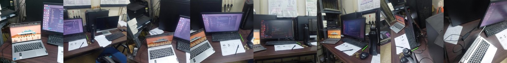
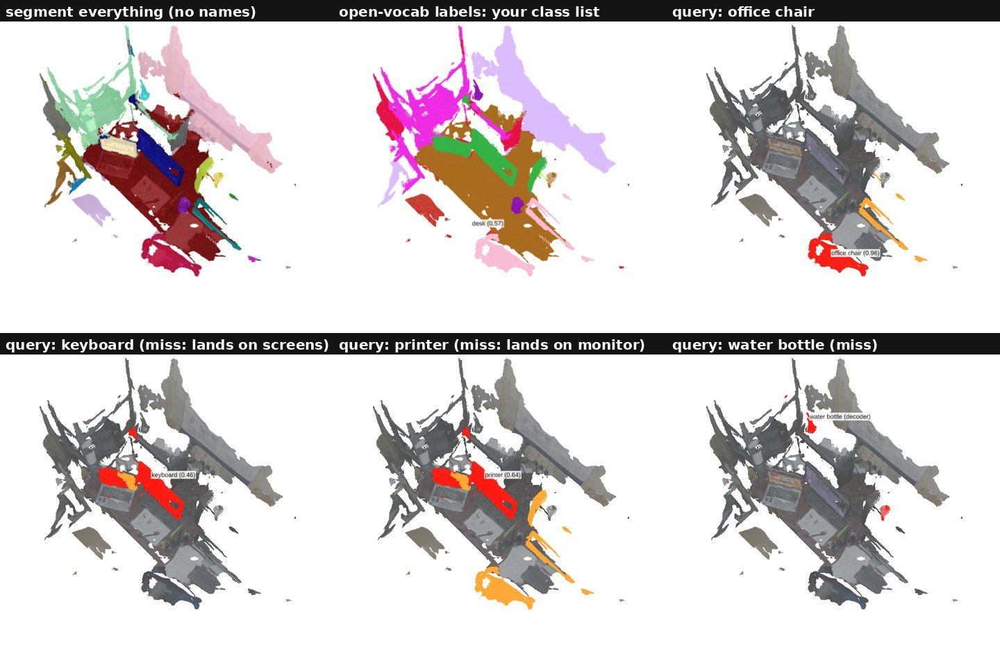
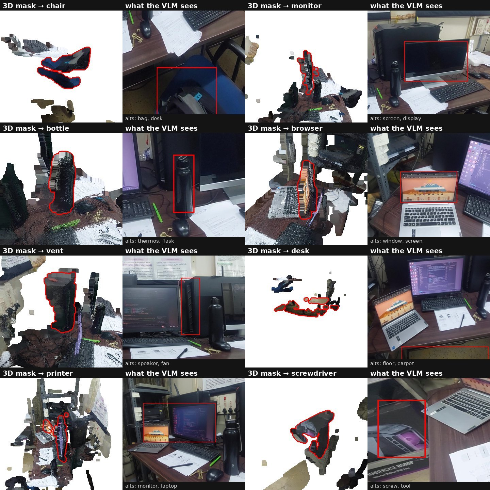
Top: frames sampled from the clip. Left: the input video. Right: segment-everything, open-vocabulary labels and text queries on the reconstructed cloud, misses included.
Below, each pair: the 3D mask from one click (left) and the frame the vision–language model sees (right), with its runner-up names. Failures are kept: a PC case named screwdriver, a rack named printer.
Unfiltered viewer output on scenes from four datasets: ten text queries (★ = word not in the training vocabulary), four random clicks with the VLM's name, open-vocabulary labels, and segment-everything.
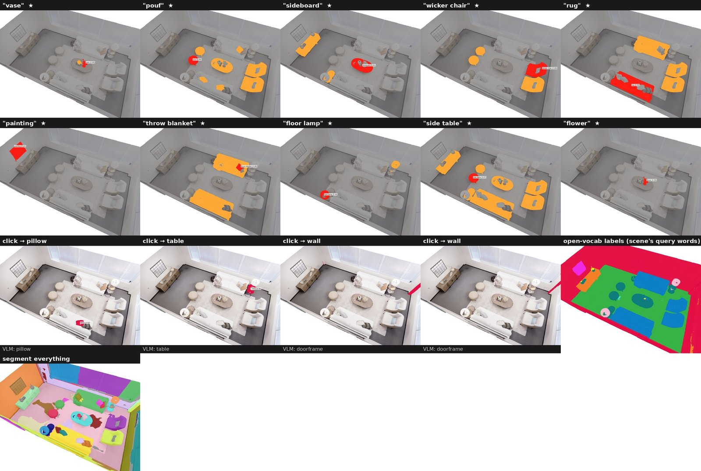
Replica · room0
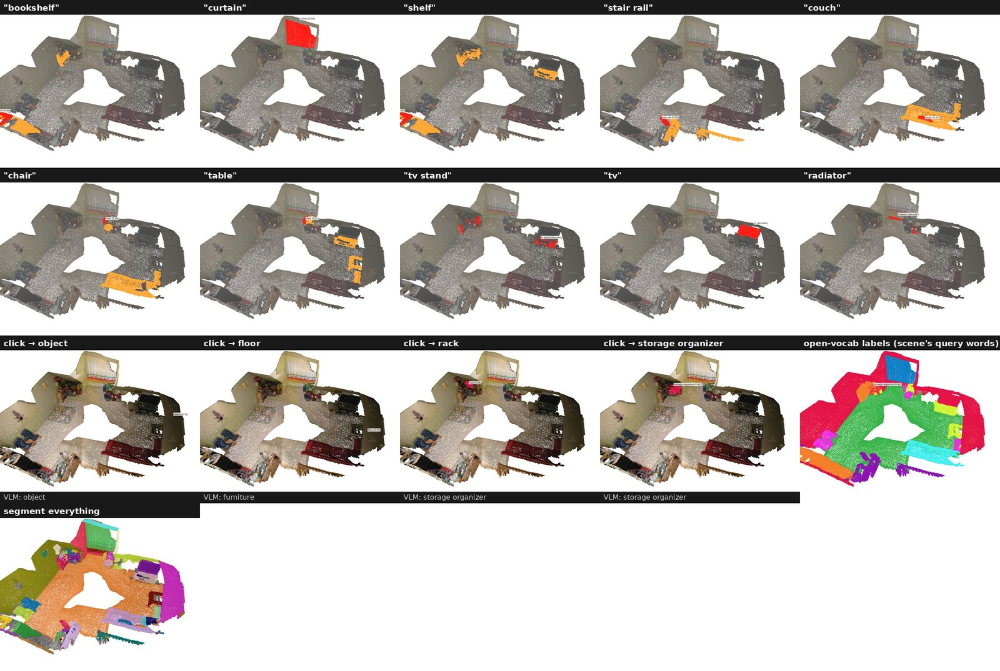
ScanNet · scene0568
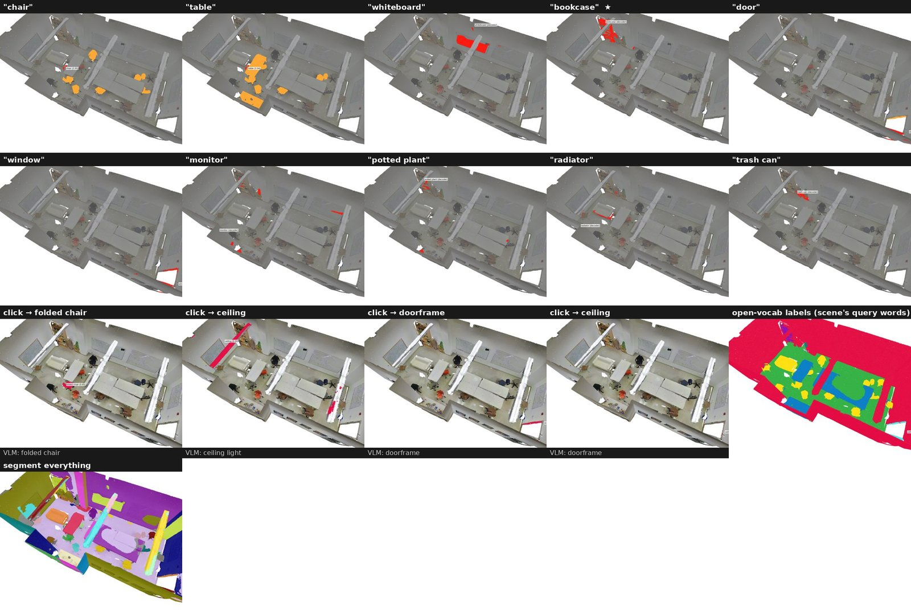
S3DIS · conference room
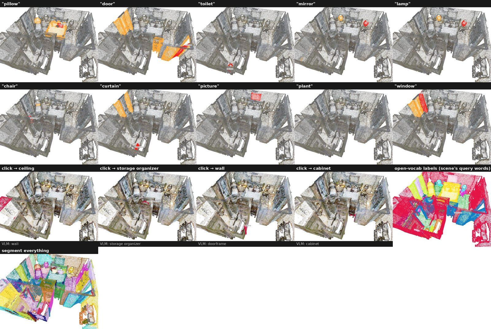
Matterport3D
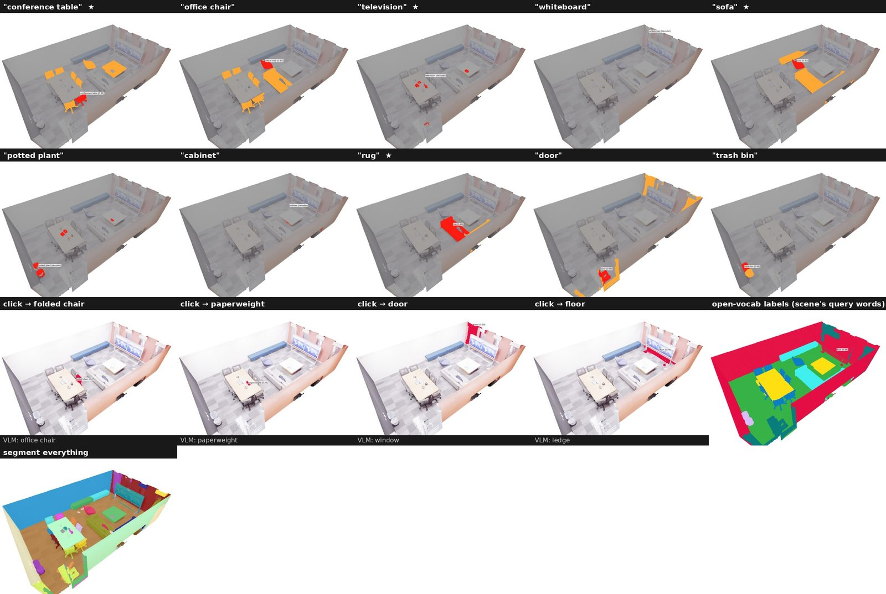
Replica · office3
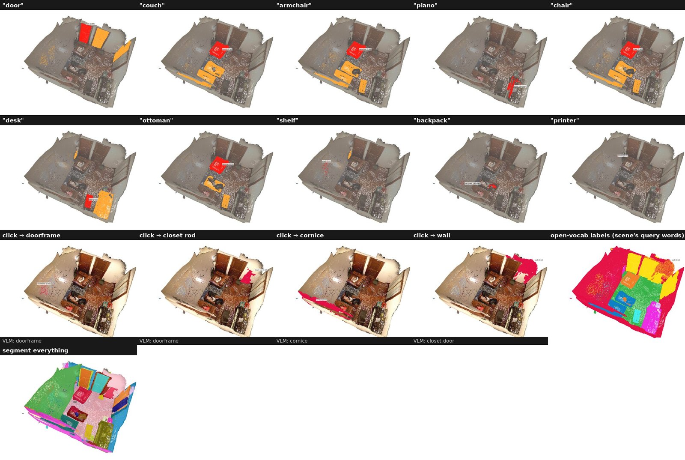
ScanNet · scene0050
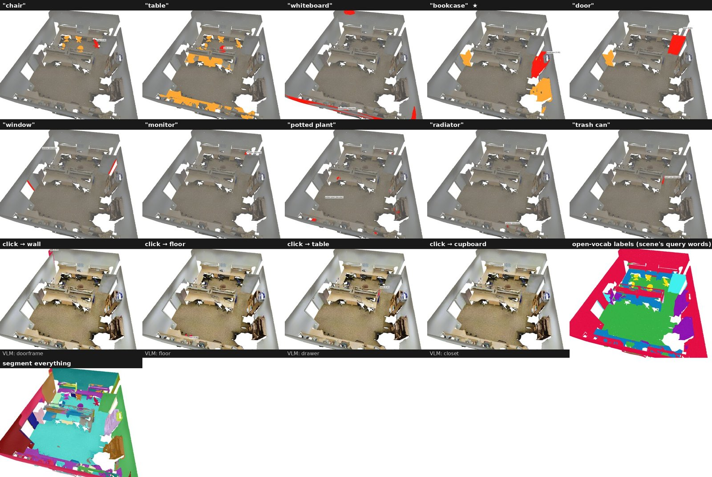
S3DIS · office 19
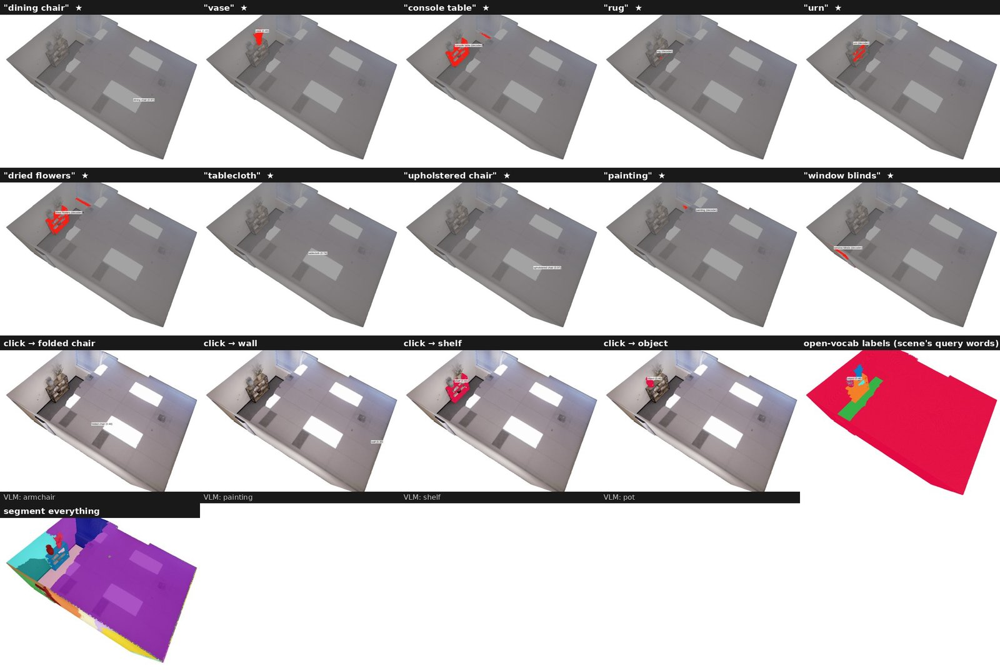
Replica · room2
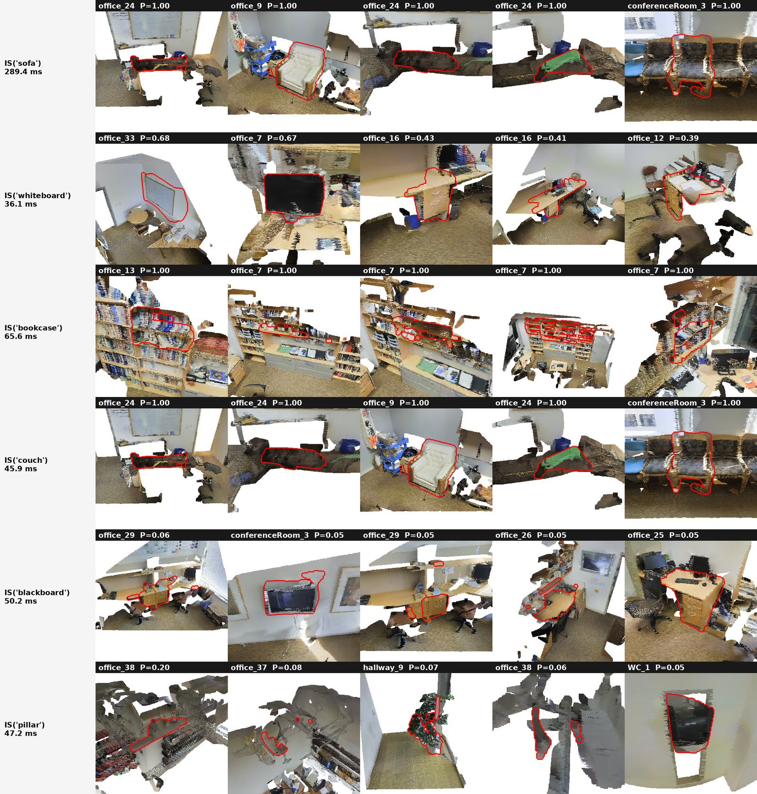
Top hits across a 68-room S3DIS building catalog, with per-query latency.
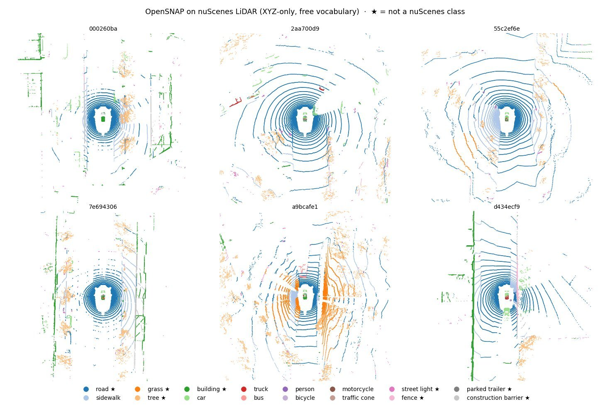
XYZ-only nuScenes sweeps labelled with words outside the dataset's classes (★).
Selected numbers. Best per row in red. “Base text head” is the frozen segmenter's own language head.
| Task / benchmark | Metric | Base text head | Prior work | OpenSNAP |
|---|---|---|---|---|
| Open-vocabulary semantic segmentation | ||||
| ScanNet val | mIoU | 41.5 | 52.0 OpenScene | 58.2 |
| Matterport-160 (unseen) | mIoU | 6.9 (1.9) | 9.5 (5.5) | 11.6 (5.7) |
| nuScenes LiDAR val | mIoU | 23.8 | 26.9 | 32.0 |
| SemanticKITTI seq 08 | mIoU / mAcc | 32.8 / 43.7 | 20.8 / 37.1 | 31.5 / 45.8 |
| Open-vocabulary instance segmentation | ||||
| Replica, 8 scenes | AP / AP50 | 14.8 / 19.7 | 13.1 / 18.4 OpenMask3D | 19.9 / 25.9 |
| S3DIS Area 5 | AP | 10.5 | – | 15.4 |
| nuScenes, 10 thing classes | AP / AP50 | 7.9 / 12.1 | – | 13.9 / 18.8 |
| SemanticKITTI, 8 thing classes | AP / AP50 | 13.9 / 16.3 | – | 20.6 / 23.0 |
| Naming and text prompts | ||||
| Click → name, Matterport-160 | accuracy | 30.7 | 18.9 VLM alone | 40.1 |
| Text → mask, ScanNet200 | mIoU | – | 11.8 training-free | 18.2 |
| Text → mask, S3DIS (zero-shot) | mIoU | – | 20.0 training-free | 27.2 |
| System | Setting | Without the relation | OpenSNAP |
|---|---|---|---|
| Query latency | S3DIS room, stored relation | 8.8 s | 0.8 ms |
| Building search | 68 rooms, 5,149 objects | – | 0.9–3.4 ms |
| Storage | 68-room catalog vs raw XYZ | 945 MB | 171 MB |
| Semantic cracking | repeat queries (AP50) | 26.8 ms (38.9) | 3.7 ms (38.7) |
All tables, protocols and negative results are in the repository's results/TABLES.md.
@article{opensnap2026,
title = {OpenSNAP: An Open-Vocabulary Object Database for 3D Scans},
author = {Pahari, Soham and Srinivas, M.},
journal = {arXiv preprint},
year = {2026}
}